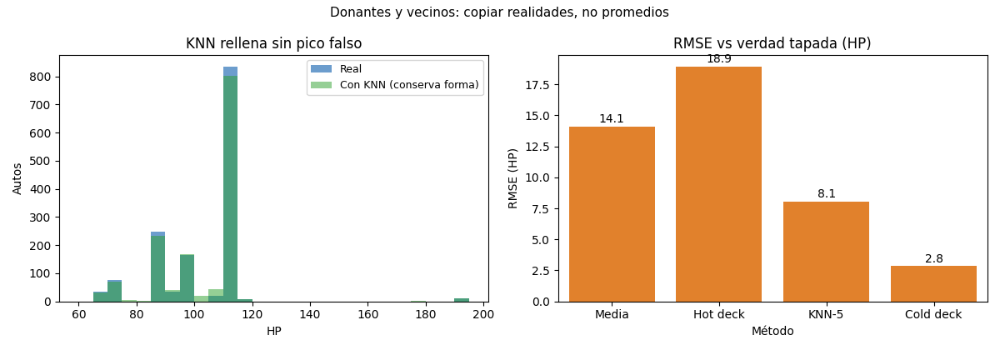

Unidad 4 · Datos faltantes e imputación · Lección 0017
Donantes y vecinos: hot deck, cold deck, KNN
Win de hoy: imputar HP copiando donantes reales
(hot deck 18,9),
tabla externa (cold deck 2,8)
y 5 vecinos (KNN 8,1).
1 · Hot deck: copiarle al parecido (RMSE 18,9)
Cada hueco copia el valor de un donante parecido del mismo dataset. Variante random hot deck: sortear un donante del mismo tramo de edad (semilla 7). RMSE 18,9: peor que la media (14,1) punto por punto… pero los 205 rellenos son valores reales (86, 110, 69…), sin pico falso. Hot deck resigna precisión y preserva distribución: para histogramas y varianzas, eso vale oro.
rd = np.random.default_rng(7)
donante = rd.choice(df.loc[completos_mismo_tramo, "HP"])2 · Cold deck: la tabla externa (RMSE 2,8)
Si existe una fuente externa confiable (manual del fabricante, censo), se usa como tabla fija: cada motor recibe su HP típico (1.3→86, 1.4→97, 1.6→110, 1.8→192, 1.9→69, 2.0→72). RMSE 2,8: casi adivina, porque el motor casi define al HP. Riesgo honesto: si la tabla envejece (nuevos motores), el relleno miente con cara seria. Cold deck es tan bueno como su fuente.
3 · KNN: promediar a los 5 vecinos (RMSE 8,1)
KNNImputer(k=5) busca los 5 autos más parecidos en KM/HP/Edad/Peso/Price
estandarizados (0008: sin escalar, KM domina) y promedia sus HP. RMSE 8,1: mejor que la media,
con valores variados (sin pico). k chico = sensible al ruido; k grande = tiende a la media. Detalle técnico: la
distancia ignora celdas vacías (nan_euclidean), por eso funciona con huecos por todos lados.
from sklearn.impute import KNNImputer
Xs = (X - X.mean()) / X.std() # estandarizar IGNORANDO NaN
imp = KNNImputer(n_neighbors=5).fit_transform(Xs)4 · Figura: forma preservada y ranking RMSE

Regenerar la figura (mismo resultado versionado en assets/img/toyota/):
python scripts/make_figures.py --only hot-deck-cold-deck-knn5 · Quiz (auto-chequeo inmediato)
6 · Fuente primaria y cierre
Para profundizar (1 fuente): Kuhn & Johnson, Applied Predictive Modeling — capítulo de preprocesamiento (imputación por vecinos y donantes) (appliedpredictivemodeling.com, también en RESOURCES.md del curso).
¿Algo no quedó claro? Preguntame al agente: cuándo hot vs cold deck, cómo elegir k, o por qué el RMSE no lo es todo. Esa pregunta vale más que releer.